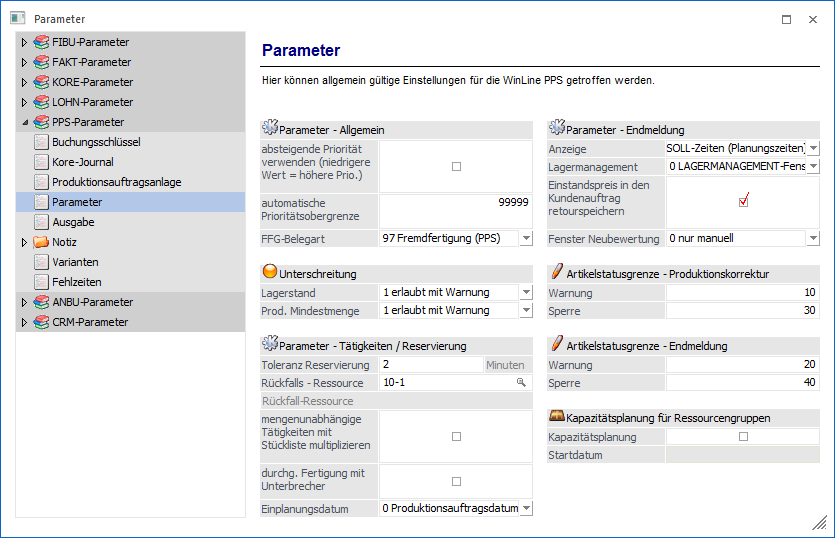
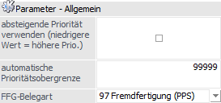
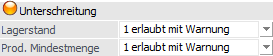
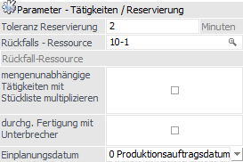
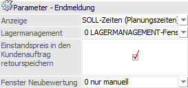
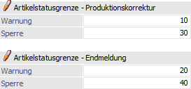
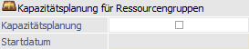

Über den Bereich "PPS-Parameter - Parameter" können allgemein gültige Parameter der WinLine PPS definiert werden.
Hinweis
Standardmäßig wird das Fenster in einem "Lesemodus" geöffnet, d.h. es können die bestehenden Einstellungen kontrolliert, Änderungen allerdings nicht durchgeführt werden. Hierfür muss zunächst mit Hilfe des Buttons "Bearbeiten" der "Bearbeitungsmodus" aktiviert werden. Alternativ kann diese Aktivierung auch über das Kontextmenü der rechten Maustaste (Funktion "Applikation xxx bearbeiten") erfolgen.

Parameter - Allgemein

Ø absteigende Priorität verwenden (niedrigere Werte = höhere Prio.)
Im Standard ist ein Produktionsauftrag mit hoher Priorität wichtiger wie ein Auftrag mit niedriger Priorität (0 = kleinste / niedrigste Priorität). Durch Aktivierung dieser Option wird dieses System umgekehrt, d.h. ein Auftrag mit niedriger Priorität ist wichtiger wie ein Produktionsauftrag mit hoher Priorität (0 = größte / höchste Priorität).
Ø automatische Prioritätsobergrenze
Über dieses Feld wird ein Vorschlagswert definiert, welcher im Leitstand, bei der Ausgabe der Materialentnahmescheine und bei den Arbeitsscheinen in dem Selektionsfeld "Priorität bis" vorbesetzt wird. Dieser Wert kann (mit einer Hinweismeldung) in den entsprechenden Menüpunkten manuell übersteuert werden.
Ø FFG-Belegart
Um das Fenster "Fremdfertigung" zu verwenden, muss eine Belegart (Typ "Einkauf" und Option "Fremdfertigung" muss aktiviert sein) in diesem Feld hinterlegt werden.
Unterschreitung

Ø Lagerstand
Mit dieser Einstellung kann gesteuert werden, wie die WinLine PPS auf Lagerstandunterschreitungen reagieren soll. Dabei sind folgende Optionen möglich:
ü 0 - erlaubt
Bei dieser Option
werden bei der Produktionsmeldung die eingetragenen Mengen vom Lager abgebucht,
egal ob diese Mengen auch tatsächlich vorhanden sind. Eine
Lagerstandunterschreitung wird nicht geprüft.
ü 1 - erlaubt mit Warnung
Bei
dieser Option wird bei der Produktionsmeldung der Lagerstand geprüft. Sind die
gewünschten Artikel nicht auf Lager, wird eine entsprechende Meldung ausgegeben
und der Anwender kann entscheiden, ob trotzdem gebucht werden soll (weil es z.B.
einen Lagerzugang gegeben hat, der noch nicht erfasst wurde) oder nicht.
ü 2 - nicht erlaubt
Bei dieser
Option ist eine Lagerstandunterschreitung nicht möglich - sind nicht alle
Artikel für die Produktionsmeldung am Lager, kann der Produktionsauftrag nicht
endgemeldet werden.
ü 3 - erlaubt mit Warnung (abzgl.
kommissionierter Menge)
Bei dieser Option wird bei der Produktionsmeldung der
Lagerstand geprüft unter Berücksichtigung der bereits kommissionierten Menge.
Sind die gewünschten Artikel nicht auf Lager, wird eine entsprechende Meldung
ausgegeben und der Anwender kann entscheiden, ob trotzdem gebucht werden soll
oder nicht.
ü 4 - nicht erlaubt (abzgl.
kommissionierter Menge)
Bei dieser Option ist eine Lagerstandunterschreitung
unter Berücksichtigung der bereits kommissionierten Menge nicht möglich - sind
nicht alle Artikel für die Produktionsmeldung am Lager, kann der
Produktionsauftrag nicht endgemeldet werden.
ü 5 - erlaubt mit Warnung (inkl.
Lagerorte)
Bei dieser Option wird bei der Produktionsmeldung der Lagerstand
geprüft. Sind die gewünschten Artikel nicht auf Lager bzw. auf dem gewählten
Lagerort, wird eine entsprechende Meldung ausgegeben und der Anwender kann
entscheiden, ob trotzdem gebucht werden soll oder nicht.
ü 6 - nicht erlaubt (inkl.
Lagerorte)
Bei dieser Option ist eine Lagerstandunterschreitung inklusive
Lagerorte nicht möglich - sind nicht alle Artikel für die Produktionsmeldung am
Lager bzw. auf den entsprechenden Lagerorten, so wird eine Endmeldung
blockiert.
Hinweis
Die Einstellungen "3 - erlaubt mit Warnung (abzgl. kommissionierter Menge)" bis "6 - nicht erlaubt (inkl. Lagerorte)" werden derzeit nur bei der Endmeldung, der Schnellendmeldung, dem EXIM und dem Webservice berücksichtigt. In der Materialentnahme findet dieses nicht statt.
Ø Prod. Mindestmenge
An dieser Stelle kann definiert werden, welche "Aktion" bei Unterschreitung der, im Artikelstamm hinterlegten, Produktionsmindestmenge ausgeführt werden soll:
ü 0 - erlaubt
Bei dieser Option
wird bei einer Unterschreitung der Produktionsmindestmenge keine eigene Meldung
ausgegeben.
ü 1 - erlaubt mit Warnung
Bei
dieser Option wird bei einer Unterschreitung der Produktionsmindestmenge eine
entsprechende Meldung ausgegeben und es kann entschieden werden, ob die Mengen
nochmals geändert werden soll oder nicht.
ü 2 - nicht erlaubt
Bei dieser
Option ist eine Unterschreitung der Produktionsmindestmenge nicht möglich. Es
muss die Menge entsprechend angepasst werden.
Hinweis
Diese Einstellung wirkt grundsätzlich für alle Produktionsartikel. Innerhalb der Belegerfassen wird die Prüfung nur bei Artikeln berücksichtigt, welche zusätzlich auf den Dispositionstyp "1 - Auftragsbezogene Produktion/Bestellung" gestellt wurden.
Parameter - Tätigkeiten / Reservierung

Ø Toleranz Reservierungen
An dieser Stelle wird gesteuert, was die minimale Zeitspanne ist, welche noch verplant werden soll / darf. Wird diese Zeitspanne klein definiert, so bleiben zwischen den Produktionsaufträgen nur wenige Lücken, es müssen Ressourcen aber ggfs. unterschiedliche Aufträge in einem kurzen Zeitraum bearbeiten.
Wird die Zeitspanne hingegen groß definiert, so kann dieses dazu führen, dass die Ressourcen in Summe über längere Zeiträume hinweg nicht genutzt werden.
Ø Rückfalls - Ressource
Hier darf nur eine Ressource eingetragen werden, welche in keinem Produktionsauftrag verwendet wird und auf inaktiv gestellt wurde. Diese Ressource wird dann benötigt, wenn nicht mehr verwendete Ressourcen gelöscht werden sollen. In diesem Fall wird die zu löschende Ressource durch die Rückfalls - Ressource ausgetauscht. Damit können auch nach dem Löschen entsprechende Auswertungen durchgeführt werden.
Ø mengenunabhängige Tätigkeiten mit Stückliste multiplizieren
Mit dieser Option kann gesteuert werden, ob die Eigenschaft "mengenunabhängige Tätigkeit" nur für die Berechnung "Menge in Stückliste x Tätigkeit" gilt oder auch für die Anzahl der Tätigkeit innerhalb der Stückliste.
Beispiel
In einer Stückliste ist eine mengenunabhängige Tätigkeit mit einer Menge von 6 Stück hinterlegt. Die Tätigkeit selbst dauert 10 Minuten. Nun sollen 10 Stück von diesem Produkt produziert werden.
ü Option ist nicht aktiviert
Ist
die Option nicht aktiviert, dann wird die Tätigkeit mit einer Dauer von 10
Minuten eingeplant (sowohl die Menge aus dem Produktionsauftrag als auch die
Menge in der Stückliste werden ignoriert).
ü Option ist aktiviert
Ist die
Option aktiviert, dann wird die Tätigkeit mit 60 Minuten eingeplant, d.h. die
Menge aus dem Stücklistenstamm (6 Stück) wird berücksichtigt. Die Tätigkeit
selbst bleibt aber eine mengenunabhängige Tätigkeit, wodurch die 10 Stück des
Produktionsauftrages nach wie vor nicht berücksichtigt werden.
Ø durchg. Fertigung mit Unterbrecher
Die Option "durchgehende Fertigung mit Unterbecher" bezieht sich auf Tätigkeiten mit der aktivierten Einstellung "durchgehende Fertigung", wobei mehrere Ressourcen verwendet werden und diese z.B. in unterschiedlichen Kalenderschemata zugewiesen sind und es dort wiederum zeitliche Abweichungen gibt.
Beispiel
In einer Stückliste gibt es eine Tätigkeit. Diese Tätigkeit ist als durchgehende Fertigung aktiviert. Die Maschinen werden feingeplant während bei den Mitarbeitern nur eine Grobplanung erfolgt. Als Ressourcen werden einmal eine definierte Maschine hinterlegt ("9-1 - Maschine"). Zusätzlich werden die Ressourcen Mitarbeiter Tagschicht (Ressourcengruppe "1", diese Arbeiten von 7 bis 15 Uhr) hinterlegt oder es kann die Nachtschicht der Mitarbeiter (Ressourcengruppe "2", diese Arbeiten von 17 bis 22 Uhr) herangezogen werden. Würde jetzt ein Produktionsauftrag angelegt werden, der mehr als 8 Stunden dauert, so könnte dieser Auftrag nicht eingeplant werden, da die Nachtschicht nicht direkt im Anschluss arbeitet. Mit der Aktivierung der Option " durchgehende Fertigung mit Unterbecher" würde die Tagschicht eingeplant werden und im Anschluss die Nachtschicht.
Ø Einplanungsdatum
An dieser Stelle kann definiert werden, mit welchem Datum das Einplanen der Tätigkeiten stattfinden soll:
ü 0 -
Produktionsauftragsdatum
Aufgrund der Vorgabe bei der Produktionsvorbereitung
und einer ggfs. durchgeführten Verfügbarkeitsprüfung erhält der Fertigartikel
(das zu produzierende Endprodukt) ein Produktionsdatum. Auf Grundlage dieses
Datums werden alle anderen Arbeitsschritte eingeplant.
ü 1 -
Verfügbarkeitsdatum
Aufgrund der Vorgabe bei der Produktionsvorbereitung und
einer ggfs. durchgeführten Verfügbarkeitsprüfung erhält jeder einzelne
Arbeitsschritt ein individuelles Produktionsdatum. Bei der Einplanung wird jede
Tätigkeit mit dem Datum des jeweiligen Arbeitsschritts ausgestattet und
entsprechend eingeplant.
Parameter - Endmeldung

Ø Anzeige
An dieser Stelle kann hinterlegte werden, welche Zeiten bei der Endmeldung als Istzeiten vorgeschlagen werden sollen. Wird keine der zur Verfügung stehenden Auswahlen aktiviert, so werden bei der Produktionsendmeldung keine Zeiten vorgeschlagen. Die Istzeiten-Erfassung erfolgt somit ohne jeglichen Vorschlag bzw. ausschließlich über den eigenen Menüpunkt "Istzeiten-Erfassung".
Ø Lagermanagement
An dieser Stelle kann definiert werden, ob eine automatische Erfassung von Lagerorten erwünscht ist, wenn ein Lagerort in der WinLine PPS benötigt wird. Folgende Varianten stehen zur Verfügung:
ü LAGERMANAGEMENT-Fenster öffnet
sich immer
Sollte der Lagerort noch nicht zugewiesen sein, so öffnet sich das
Fenster "Lagerorte erfassen". An dieser Stelle muss manuell ein Lagerort gewählt
und dieses per Button "Ok" bzw. Taste F5 bestätigt werden.
ü Automatik wird
unterstützt
Sollte der Lagerort noch nicht zugewiesen sein, so öffnet sich
das Fenster "Lagerorte erfassen". Wenn es für den Ausgangsartikel nur einen
Lagerort gibt, so wird die Zu- bzw. Abgangsmenge (wenn ausreichend vorhanden)
automatisch eingetragen und die Erfassung gespeichert.
Hinweis
Die Automatik wird in den folgenden Programmbereichen unterstützt:
ü Produktionsendmeldung
ü Produktions-Schnellendmeldung
ü Expressendmeldung
Ø Einstandspreis in den Kundenauftrag retourspeichern
Wurde diese Option aktiviert, so wird bei der Produktionsendmeldung der neu errechnete Einstandspreis (mit welchem der fertige Produktionsartikel auf das Lager gebucht wurde) in den Kundenauftrag FIX zurückgeschrieben.
Hinweis
Voraussetzung für das Retourspeichern ist eine auftragsbezogene Produktion! Des Weiteren ist zu beachten, dass in den Auftrag immer der Einstandspreis der zuletzt getätigten Produktionsendmeldung geschrieben wird.
Ø Fenster Neubewertung
Mit Hilfe einer Auswahlliste kann gesteuert werden, ob die Produktions-Neubewertung automatisch in Verbindung mit einer abschließenden Endmeldung ausgeführt werden soll oder nicht. Folgende Varianten stehen zur Verfügung:
ü 0 - nur manuell
Bei dieser
Option wird die Produktions-Neubewertung nicht automatisch bei einer
abschließenden Endmeldung des Fertigartikels aufgerufen (die Neubewertung kann
allerdings im Fenster "Produktionsauftrag Neubewertung" nachträglich
durchgeführt werden).
ü 1 - automatisch aus Endmeldung
ohne Buchen
Bei dieser Option wird die Produktions-Neubewertung automatisch
bei einer abschließenden Endmeldung des Fertigartikels aufgerufen. Die
Neubewertung wird aber nicht sofort ausgeführt, sondern das Fenster bleibt
vorerst offen, so dass die Bewertungen vor dem Buchen kontrolliert werden
können.
ü 2 - automatisch aus Endmeldung
inkl. Buchen
Bei dieser Option wird die Produktions-Neubewertung automatisch
bei einer abschließenden Endmeldung des Fertigartikels aufgerufen und sofort
(d.h. wenn Bewertungs-Differenzen vorliegen) ausgeführt.
Artikelstatusgrenze

In den nachfolgenden Feldern kann eine Artikelstatusgrenze angegeben werden. Der Artikelstatus wird hierbei pro Produktionskomponente geprüft.
Ø Artikelstatusgrenze Endmeldung - Warnung
In das Feld "Warnung" kann die Artikelstatusnummer hinterlegt werden, ab welcher eine Warnung im Fenster "Produktionskorrektur" ausgegeben werden soll.
Ø Artikelstatusgrenze Produktionskorrektur - Sperre
In das Feld "Sperre" kann die Artikelstatusnummer hinterlegt werden, ab welcher keine Bearbeitung bzw. kein Speichern im Fenster "Produktionskorrektur" erlaubt ist.
Ø Artikelstatusgrenze Endmeldung - Warnung
In das Feld "Warnung" kann die Artikelstatusnummer hinterlegt werden, ab welcher eine Warnung im Fenster "Produktionsendmeldung" ausgegeben werden soll.
Ø Artikelstatusgrenze Endmeldung - Sperre
In das Feld "Sperre" kann die Artikelstatusnummer hinterlegt werden, ab welcher keine Bearbeitung bzw. kein Speichern im Fenster "Produktionsendmeldung" erlaubt ist.
Kapazitätsplanung für Ressourcengruppen

Ø Ressourcengruppen - Kapazitätsplanung
An dieser Stelle kann definiert werden, ob man mit einer Kapazitätsplanung (Grobplanung) arbeiten möchte. Nach Aktivierung kann pro Ressourcengruppe die Planungsmethode im Ressourcenstamm hinterlegt werden.
Ø Startdatum
Die Kapazitätsplanung (d.h. Grobplanung) wird ab dem hier hinterlegten Datum durchgeführt.